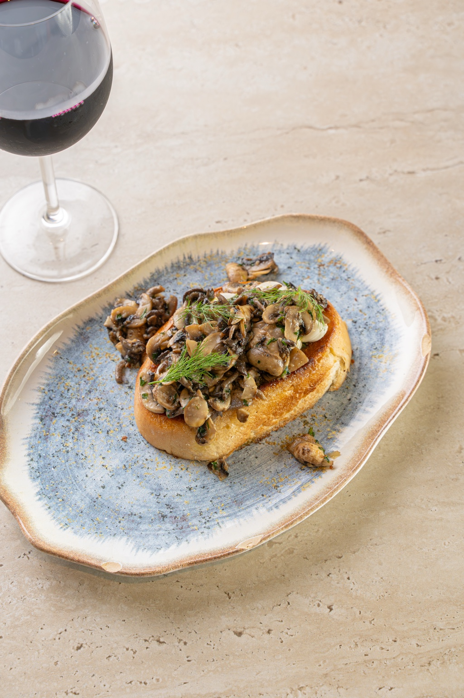

DOURADOS · MATO GROSSO DO SUL
A boa noite
começa à mesa.
Sabores do mundo, boas conversas e o prazer de jantar sem pressa. Peça para entrega ou retirada, ou reserve sua mesa.
Monte seu pedidoUma casa para reunir, compartilhar e celebrar.

TARTINE DE COGUMELOS · R$ 65,00SEU PEDIDO
Sabores para levar.
Seu carrinho está vazio.
Total: R$ 0,00
UM ENCONTRO MARCADO
Reserve seu momento.
A solicitação será enviada ao restaurante. Sua reserva depende da confirmação da equipe.
PRAZER, SUA PRÓXIMA MESA.
Mais que uma refeição.
Um bom encontro.
Cozinha internacional em Dourados: massas, risotos, carnes, vinhos e drinks para um jantar sem pressa. Toda segunda-feira, traga seu vinho e aproveite a rolha livre.
VENHA NOS CONHECER
Seu lugar à mesa.
Estamos em Dourados, Mato Grosso do Sul. Será um prazer receber você.
- Endereço
- Rua Nelson de Araújo, 684 — Dourados, MS
- Horário de funcionamento
- De segunda a sábado, a partir das 19h
- Contato e reservas
- (67) 99841-8006